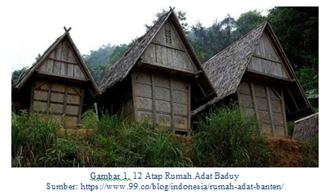
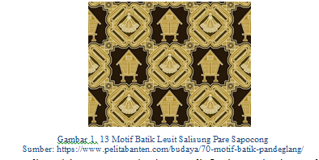
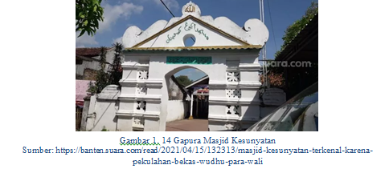
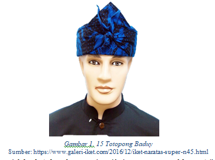
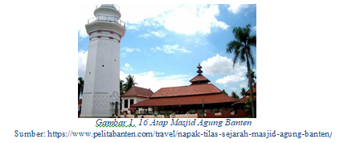

Banten adalah salah satu wilayah yang memiliki keanekaragaman budaya yang masih berkembang sampai saat ini misalnya dalam kesenian adat istiadat, rumah adat, makanan khas, pakaian adat, dan lain sebagainya. Potensi budaya yang ada di Banten harus digali secara optimal dikarenakan kebudayaan Bantenmemiliki keunikan dan kekhasannya tersendiri. Keunikan tersebut dapat menajdi sebuah modal bagi eksistensi budaya Banten untuk diperkenalkan kepada masyarakat umum.
Berdasarkan penelitian-penelitian di atas, untuk menanamkan pemahaman konsep teorema Pythagoras disinyalir akan lebih mudah dipahami jika dalam mempelajarinya menggunakan permasalahan dunia nyata dan pengalaman bermakna yang berasal dari kehidupan sehari-hari salah satunya yaitu budaya. Sehingga dalam mempelajari matematika perlu mengkaitkan antara budaya dengan matematika, keterkaitan antara matematika dengan budaya adalah etnomatematika.
Oleh karena itu, berikut merupakan contoh-contoh budaya yang terdapat di Banten yang memiliki keterkaitan dengan teorema Pythagoras.

Rumah adat Baduy disebut imah, berbentuk empat persegi panjang dengan atap kampung dan sosoran di salah satu sisinya yang disebut atap sulah nyanda. vBagian dalam rumah terdiri dari tiga ruangan, yakni: Sosoro di sisi selatan yang digunakan untuk menerima tamu; Tepas di sisi samping memanjang ke belakang dan digunakan untuk ruang kegiatan keluarga; dan Imah yang merupakan inti rumah digunakan untuk kegiatan inti keluarga.

Motif batik Leuit diambil dari salah satu tempat yang digunakan sebagai tempat penyimpanan padi setelah panen atau lumbung padi. Leuit atau lumbung adalah bangunan tradisional yang diperuntukan untuk menyimpan padi hasil pertanian. Leuit terdapat pada kebudayaan masyarakat agraris masyarakat Banten. Pada motif batik di atas terdapat motif yang berbentuk perpotongan persegi dan segitiga yang mengandung konsep pembuktian teorema Pythagoras.

Masjid Kasunyatan mempunyai 3 sisi gapura yang berposisi di sebelah barat, timur, dan selatan. Gapura di arah barat disebut pintu masuk ke arah halaman makam di sisi utara dan juga berfungsi pembatas dengan makam di halaman timur. Pada bagian atasnya terdapat ragam hias pola geometris.

Totopong adalah ikat kepala pria dari Baduy yang memiliki motif batik khas Baduy. Totopong adalah sebuah kain persegi berukuran 50 x 50 cm yang kemudian diikatkan ke kepala. Totopong Baduy berfungsi sebagai penutup rambut orang Baduy yang panjang. Totopong memiliki berbagai variasi sesuai dengan teknik ikatnya, seperti parengkos nangka. Parengkos nangka adalah bentuk simple yang melipat kain batik Baduy menjadi segitiga di atas dahi dengan ikatan di bagian belakang kepala.
Pada totopong Baduy ada bagian depan yang membentuk sebuah segitiga. Totopong baduy yang memiliki ciri segitiga di bagian depan mencirikan karakteristik status sosial yang biasa digunakan dari kalangan kaum pria. Pada konteks matematika segitiga mencirikan konsep Pythagoras. Selain itu kain dan teknik anyam akan mempengaruhi bentuk segitiga. Totopong baduy memiliki keunikan baik segi budaya maupun matematikanya.

Masjid Agung Banten memiliki atap lima tingkat berbentuk bujur sangkar setinggi 30 m, berupa atap tumpang yang tersusun semakin ke atas makin mengecil dan yang paling atas berbentuk limas yang disebut kubah dan setiap sisinya berbentuk segitiga sama sisi . Atap ini menggunakan genteng dengan memolo pada puncaknya, dimana tinggi memolo tersebut adalah 1,2 meter terbuat dari tanah liat. Rancangan atap masjid yang bersusun lima mirip dengan pagoda cina dan menjadi keunikan tersendiri bagi masjid.